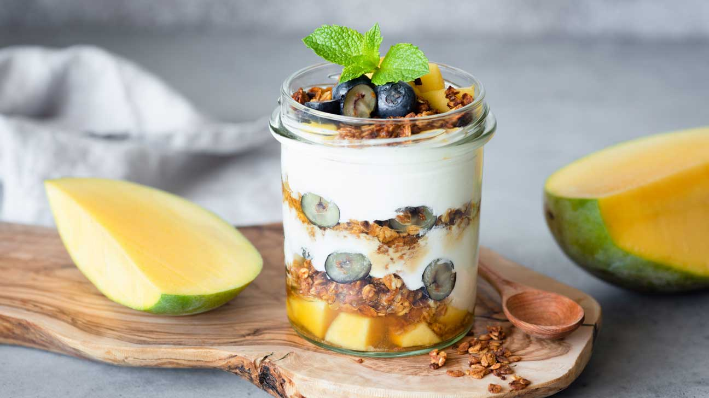

TIN TỨC
LỘ DIỆN SIÊU NĂNG LỰC TỪ TRÁI SOÀI!
Soài là một những loại trái chủ lực của đồng bằng sông Cửu Long (ĐBSCL), chiếm khoản 48% tổng diện tích soài cả nước. Trong đó, tỉnh Đồng Tháp hiện có diện tích trồng soài khoảng 12.171ha - lớn nhất vùng ĐBSCL với sản lượng 124 ngàn tấn Xem chi tiết
SỬA CÁC LOẠI HẠT-MÓN NGON CHO HỆ MIỄN DỊCH KHỎE

Các loại sữa hạt càng ngày trở nên quen thuộc với mọi người, bởi hàm lượng dinh dưỡn cao và lành tính. Với thị trường sữa hạt đa dạng phong phú, hôm nay chúng ta cùng điểm qua xem có các loại sữa hạt nào, và loại nào là bổ dưỡng nhất cho sức khõe? Xem chi tiết
SỮA CHUA KIWI-MÓN QUÀ CHO SỨC KHỎE

Kiwi thành phần dinh dưỡng rất cao so với các loại hoa quả khác. Hàm lượng vitamin C cao cho hệ miễn dịch khỏe mạnh cùng nguồn chất xơ hỗ trợ hệ tiêu hóa. Siêu quả Kiwi cho cár nhà siêu khõe , 100% Vitamin C cần thiết cho mỗi ngày Xem chi tiết
RA MẮT SỬA CHUA Freeeze TRÊN NỀN TẢNG IOS

Nhằm mang đến cho tất cả khách hàng những trãi nghiệm thú vị nhất Công ty Sữa Chua Feeeze giới thiệu app đặt hàng độc đáo, giúp khác hàng mua sắm được mọi lúc mọi nơi với nhiều tiện ích Xem chi tiết
ĐĂNG KÝ THÀNH VIÊN - NHẬN NGAY ƯU ĐÃI

Công ty sữa chua hân hạnh mang đến chương trình "Đăng ký thành viên" với nhiều ưu đãi độc đáo. Member Card - thẻ thành viên nhà Sữa Chua Feeeze dành cho tất cả khác hàng đăng kí tài khoản và phát sinh đơn hàng Xem chi tiết
TUYỂN GIÁM SÁT CHUỖI CỬA HÀNG

Tuyển Giám Sát chuỗi cửa hàng: - Tại khu vực TP Hải Phòng & các tỉnh lân cận - Số lượng: 01 MÔ TẢ: Giám sát hoạt động kinh doanh các cửa hàng; Kiểm tra lịch làm việc của các cửa hàng Xem chi tiết